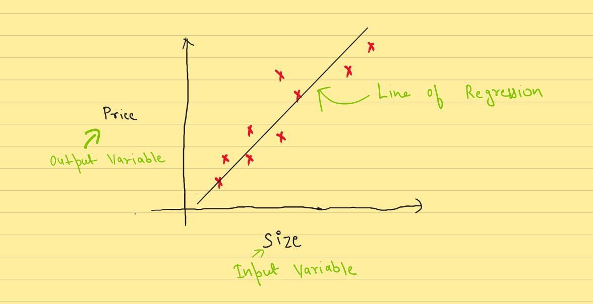
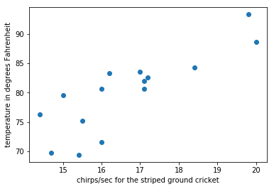
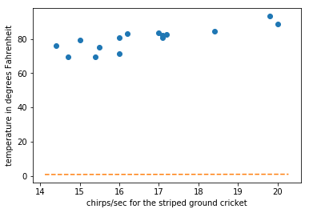
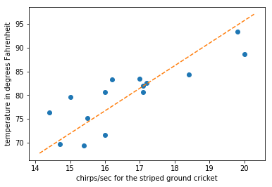

# Imports
import numpy as np
import pandas as pd
import matplotlib.pyplot as pltIn this blog I am going to explain Regression, it’s type, and how can we code a Linear Regression from scratch in Python. First we will look at the concepts and maths behing this algorithm and then we will implement it using Python, NumPy and Pandas.
By the end of this blog you will bw able to understand:
- What is Regression and classification?
- Difference between Simple Linear Regression and Multiple Linear Regression.
- Hyothesis(model) of Linear Regression
- Cost function
- Gradient Descent
- How to code all these equation and algorithm in Python?

Regression vs Classification
In Machine Learning, If the output variable has continous range, and we have to find the relationship between the the input and output variable(s). This is called Regression. Examples include - House Price, Salary, etc
In contrast, if the the output has descrete range. It is then called Classification. Examples include - Cat vs Dog, Spam/Not Spam, etc
These regresssion models can be used for both Inference and Prediction.
In this blog we are focused to get Prediction using Regression.
Regression
Regression in itself can be of multiple types - Linear and Non-Linear Regression.
Linear Regression - When the model relates the input and output varibale in straight line. Non-Linear Regression - When the model relates the input and output varibale in curved line.
Regression
In this notebook we are going to implement Linear Regression on a small dataset.
We are using a small dataset from here. This a data about Cricket Chirps Vs. Temperature. We will use linear regression to fit model.
# loading data
data = pd.read_excel('slr02.xls')*** No CODEPAGE record, no encoding_override: will use 'ascii'Now we look into data we see there are two columns X and Y.
were X = chirps/sec for the striped ground cricket
and Y = temperature in degrees Fahrenheit
# visualise data
data| X | Y | |
|---|---|---|
| 0 | 20.000000 | 88.599998 |
| 1 | 16.000000 | 71.599998 |
| 2 | 19.799999 | 93.300003 |
| 3 | 18.400000 | 84.300003 |
| 4 | 17.100000 | 80.599998 |
| 5 | 15.500000 | 75.199997 |
| 6 | 14.700000 | 69.699997 |
| 7 | 17.100000 | 82.000000 |
| 8 | 15.400000 | 69.400002 |
| 9 | 16.200001 | 83.300003 |
| 10 | 15.000000 | 79.599998 |
| 11 | 17.200001 | 82.599998 |
| 12 | 16.000000 | 80.599998 |
| 13 | 17.000000 | 83.500000 |
| 14 | 14.400000 | 76.300003 |
type(data)pandas.core.frame.DataFrame# data we got are in pandas dataframe format
# we need to cast it in numpy array for calulations
X = np.array(data.X)
y = np.array(data.Y)Now we have two arrays. One containing input features and other array has output features
# visualise casted data
X,y(array([20. , 16. , 19.79999924, 18.39999962, 17.10000038,
15.5 , 14.69999981, 17.10000038, 15.39999962, 16.20000076,
15. , 17.20000076, 16. , 17. , 14.39999962]),
array([88.59999847, 71.59999847, 93.30000305, 84.30000305, 80.59999847,
75.19999695, 69.69999695, 82. , 69.40000153, 83.30000305,
79.59999847, 82.59999847, 80.59999847, 83.5 , 76.30000305]))type(X)numpy.ndarray# function for plotting data points
def plot_points(X, y, xlabel, ylabel):
"""Plot points given X and Y co-ordinates and labels them"""
plt.plot(X, y, 'o')
plt.xlabel(xlabel)
plt.ylabel(ylabel)# plot data points
plot_points(X, y, "chirps/sec for the striped ground cricket", "temperature in degrees Fahrenheit")
We have initialised theta to a random value. We then create hypothesis for model which is linear in nature
# initialised theta
np.random.seed(2)
theta = np.random.rand(2,1)
# hypothesis of model
def hypothesis(X, theta):
"""Predicts output feature given input feature and theta"""
return theta[0] + theta[1] * XWe want to draw our line of regression to see if fit data correctly.
# plots line of regression
def draw_line(theta):
"""Plot a line from slope and intercept"""
axes = plt.gca()
x_vals = np.array(axes.get_xlim())
y_vals = hypothesis(x_vals, theta)
plt.plot(x_vals, y_vals, '--')We want to plot data points and line of regession on same plot to see if we are progressing as we train our model
# plots points and lines
def draw_points_and_lines(X, y, xlabel, ylabel, theta):
"""Draws lines and points"""
plot_points(X, y, xlabel, ylabel)
draw_line(theta)Now without training our model let’s were the line of regression lies
# draw line of regression without traing model
draw_points_and_lines(X, y, "chirps/sec for the striped ground cricket", "temperature in degrees Fahrenheit", theta)
Cost function givies us measure of how much we are error we have
we need to minimize it. Here we have used sqared error cost function which basically sums over all the sqared error of indivisual points
# cost function
m = len(X)
def cost(X, y, theta):
"""Returns cost"""
return (1/(2*m)) * np.sum((hypothesis(X, theta) - y) ** 2)# initial cost without trraining model
cost(X, y, theta)3154.8870744571304(hypothesis(X, theta) - y), X(array([-87.64547893, -70.74918386, -92.35066878, -83.38696549,
-79.72066499, -74.36214545, -68.88288644, -81.12066652,
-68.56474267, -82.44400317, -78.77511009, -81.71807236,
-79.74918386, -82.62325916, -75.49067042]),
array([20. , 16. , 19.79999924, 18.39999962, 17.10000038,
15.5 , 14.69999981, 17.10000038, 15.39999962, 16.20000076,
15. , 17.20000076, 16. , 17. , 14.39999962]))Now we will minimize cost with help of gradient descent
# minimize cost
def gradient_descent(X, y, theta, alpha, steps):
for i in range(steps):
old_cost = cost(X, y, theta)
temp0 = theta[0] - alpha * ((1/m) * np.sum(hypothesis(X, theta) - y))
temp1 = theta[1] - alpha * ((1/m) * np.dot((hypothesis(X, theta) - y), X))
theta[0] = temp0
theta[1] = temp1
new_cost = cost(X, y, theta)
if new_cost > old_cost:
print("WARNING!!! COST INCREASING")
else:
print("Cost Decresing", new_cost)# train model of 100 iterations
gradient_descent(X, y, theta, alpha=0.0001, steps=100)
thetaCost Decresing 9.24630550184814
Cost Decresing 9.246299931707105
Cost Decresing 9.246294361576792
Cost Decresing 9.246288791457197
Cost Decresing 9.246283221348309
Cost Decresing 9.246277651250153
Cost Decresing 9.246272081162708
Cost Decresing 9.246266511085983
Cost Decresing 9.246260941019973
Cost Decresing 9.246255370964697
Cost Decresing 9.246249800920113
Cost Decresing 9.246244230886267
Cost Decresing 9.246238660863133
Cost Decresing 9.246233090850716
Cost Decresing 9.246227520849024
Cost Decresing 9.24622195085804
Cost Decresing 9.246216380877774
Cost Decresing 9.246210810908229
Cost Decresing 9.246205240949406
Cost Decresing 9.24619967100129
Cost Decresing 9.246194101063905
Cost Decresing 9.246188531137236
Cost Decresing 9.246182961221276
Cost Decresing 9.246177391316046
Cost Decresing 9.246171821421523
Cost Decresing 9.246166251537723
Cost Decresing 9.246160681664634
Cost Decresing 9.246155111802265
Cost Decresing 9.24614954195063
Cost Decresing 9.246143972109698
Cost Decresing 9.246138402279486
Cost Decresing 9.246132832459992
Cost Decresing 9.246127262651198
Cost Decresing 9.246121692853151
Cost Decresing 9.246116123065809
Cost Decresing 9.246110553289181
Cost Decresing 9.246104983523267
Cost Decresing 9.246099413768095
Cost Decresing 9.24609384402361
Cost Decresing 9.246088274289857
Cost Decresing 9.246082704566835
Cost Decresing 9.246077134854506
Cost Decresing 9.246071565152905
Cost Decresing 9.246065995462017
Cost Decresing 9.246060425781852
Cost Decresing 9.246054856112401
Cost Decresing 9.246049286453669
Cost Decresing 9.246043716805653
Cost Decresing 9.246038147168356
Cost Decresing 9.246032577541783
Cost Decresing 9.246027007925916
Cost Decresing 9.246021438320767
Cost Decresing 9.246015868726339
Cost Decresing 9.246010299142634
Cost Decresing 9.246004729569632
Cost Decresing 9.245999160007363
Cost Decresing 9.245993590455805
Cost Decresing 9.245988020914956
Cost Decresing 9.245982451384831
Cost Decresing 9.24597688186542
Cost Decresing 9.245971312356733
Cost Decresing 9.245965742858754
Cost Decresing 9.245960173371506
Cost Decresing 9.245954603894967
Cost Decresing 9.245949034429136
Cost Decresing 9.24594346497403
Cost Decresing 9.245937895529648
Cost Decresing 9.245932326095968
Cost Decresing 9.24592675667302
Cost Decresing 9.245921187260768
Cost Decresing 9.245915617859259
Cost Decresing 9.245910048468446
Cost Decresing 9.245904479088361
Cost Decresing 9.245898909718987
Cost Decresing 9.24589334036034
Cost Decresing 9.245887771012399
Cost Decresing 9.245882201675181
Cost Decresing 9.245876632348676
Cost Decresing 9.245871063032888
Cost Decresing 9.245865493727813
Cost Decresing 9.245859924433464
Cost Decresing 9.245854355149827
Cost Decresing 9.245848785876907
Cost Decresing 9.245843216614697
Cost Decresing 9.245837647363222
Cost Decresing 9.245832078122447
Cost Decresing 9.24582650889239
Cost Decresing 9.245820939673049
Cost Decresing 9.245815370464433
Cost Decresing 9.245809801266523
Cost Decresing 9.245804232079339
Cost Decresing 9.245798662902864
Cost Decresing 9.245793093737111
Cost Decresing 9.245787524582067
Cost Decresing 9.245781955437742
Cost Decresing 9.245776386304136
Cost Decresing 9.24577081718125
Cost Decresing 9.245765248069072
Cost Decresing 9.245759678967609
Cost Decresing 9.245754109876883array([[0.74752333],
[4.74721199]])After training we can clearly see we have reduced cost and have found appropriate value of theta
# cost after traing model
cost(X, y, theta)9.245754109876883# value of theta after training
thetaarray([[0.74752333],
[4.74721199]])# regression line after traing model
draw_points_and_lines(X, y, "chirps/sec for the striped ground cricket", "temperature in degrees Fahrenheit", theta)
We can clearly see we have fitted line to the points. Thus we have successfully used linear regression to train a model.
Prediction
x = np.array([19])
hypothesis(x, theta)array([90.94455114])